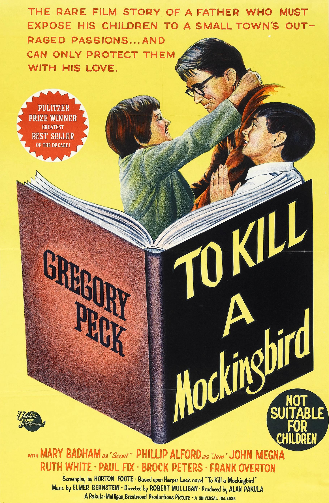

To Kill a Mockingbird
35th Academy Awards
(Oscars 1963)
8 Nominations, 3 Awards
| Nominations | ||
|---|---|---|
| Category | Nominees | Result |
| Best Picture | Alan J. Pakula | Nominated |
| Actor | Gregory Peck | Won |
| Actress in a Supporting Role | Mary Badham | Nominated |
| Directing | Robert Mulligan | Nominated |
| Writing (Screenplay--based on material from another medium) | Horton Foote | Won |
| Cinematography (Black-and-White) | Russell Harlan | Nominated |
| Art Direction (Black-and-White) | Alexander Golitzen, Henry Bumstead, and Oliver Emert | Won |
| Music (Music Score--substantially original) | Elmer Bernstein | Nominated |